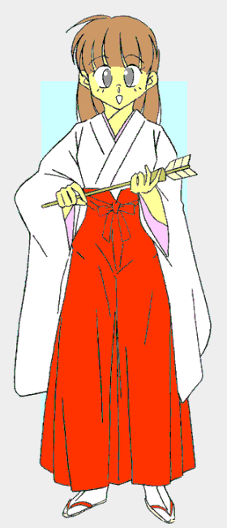
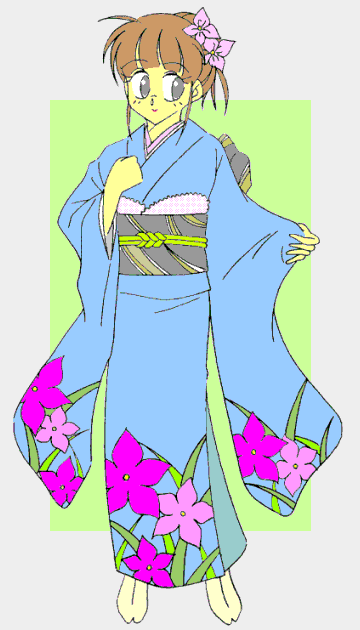

大晦日。 
もうじき年が明ける、そんな時間。
さつきさん、それからまことさんも一緒です。
今のわたしたちの格好は、いわゆる巫女装束。私とまことさんは長い髪の先端を縛り、ますます巫女さんらしくなっています。
そうです。……今夜は神社で「巫女さん」として過ごすのです。
ゴーン、ゴーン――
除夜の鐘が突き始められました。
二年参りの人々が、お参りを済ませてこちらへとやってきます。
「あけましておめでとうございます」
参拝客の方にご挨拶をします。
「おめでとう。破魔矢の小さいほうを――」
「千円のお納めになります」
にっこり受け取って、代わりに破魔矢を差し上げます。今年も良い年になりますように……
（とうとう女の子で年を越してしまった……）
私は笑顔を浮かべながらも、心の中ではそう嘆いていました。
除夜の鐘はそんな私の心情を知ってか知らずか、鳴り続けます。
そしてフラッシュが……え？ フラッシュ？
「ちょっとっ、写真はやめてくださいっ！」
さつきさんが声を上げます。
「ここは神様のいる場所なんでしょ。写真撮影なら別のところで応じるから――」
まことさんが、どこかピントのずれた抗議をします。ですがそのアマチュアカメラマンさんは、やめる様子がありません。
恐らくは、こういう格好に『萌える』人たちのために撮っているのでしょう。
まぶしくて目を開けていられないほど、しつこく撮り続けています。
そう、わかりました……彼はまともじゃない。それならば――
わたしは彼の前に立って、レンズにびしっと人差し指を突きつけてこう言い放ちました。
「妖魔ぁ退散っっっ！！」
「……」
あ……みんな固まっちゃいました。
「つかっちゃん……それはちょっと……」
……ああっ、神様の前でなんて間抜けな――
こんなだから、男の子と女の子を行ったりきたりしているのでしょうか？
着せ替え少年
〜ｄｒｅｓｓ ｕｐ ｂｏｙ７〜 剣術小町
作：城弾
あけて新年。 
一年の計は元旦にあり。
元旦――元日の朝というには随分と遅くなっちゃったけど、とりあえず寝覚めは「男」だ。
よし、今年の抱負。
二度と女物は着ない。絶対女の子にはならないぞ。
このままじゃ下手すると、「男を愛する、完全な女」になってしまう……
「みゆき、司、そろそろ起きてきなさい。……新年の挨拶よ」
母さんが僕たちを起こしにきた。僕はパジャマを脱いで着替え始めた。
午後。
さつきちゃんと待ち合わせて、初詣。
本当は二年参りにしたかったけど、何しろ巫女さんだったし。
それにしても今頃「セ○ラ○ム○ン」ネタなんて恥ずかしい。……あ、でも実写で復活したか（ちなみにあのカメラマンさんは逃げ損ねて、フィルムを没収され燃やされてしまった）。
「ねえ、どうせなら大きな神社に行こうよ？ そこの神様に、つかっちゃんのその体質を治してもらえるようにお願いしたら？」
さつきちゃんが言う。……確かにそうだね。
……よくよく考えたら、こうやって流されるのが第一にまずいんじゃないだろうか？
大きな神社。テレビでも毎年この様子が中継されるほど凄い参拝客。
誘ったさつきちゃんも、ちょっと後悔しているみたいだ。
「……ううん、きっとこれは試練なのよ。この人込みの中をガマンして参拝できたら願いがかなうのよ」
「それって……なんだかあつかましくない？」
「どこが？ 男の子が男の子として普通に暮らしたいだけでしょ？」
言われてみれば、普通の男ならまず着ないであろう種類と数の女の子の服を、この七ヶ月で着ているし。
箪笥には家族公認で女物。あまつさえ学校でも女子グループに入れられつつあるし、なまじ運動神経が悪くないものだから、女子運動部の助っ人に駆りだれるし……
「よし、行こう！ さつきちゃん」
僕は意を決して、人の海に乗り込んだ……が…………
あまりに多い参拝客の波に流されてとんでもない方向に行ってしまい、結果としてお参りが出来なかった。
あうう……今年も先行き不安だ。
結局地元に帰って、小さな神社で二人並んで柏手を打っていた。
（贅沢は言いません。せめて男としての生活をさせてください……）
うう……っ。普通の男はこんな願いなんてしないと思うけど。
お参りを終えると、僕たちは神社をあとにした。
鳥居をくぐったあたりでさつきちゃんが尋ねてきた。
「ねえつかっちゃん。このあとの予定はどうなってるの？」
「うん。おじさんたちがそろそろ到着するんじゃないかな？ だからうちに帰るよ」
「そうなんだ。あたしんちは明日だから今日は暇ね。いきなり寝正月かしら？」
「ごめんね、さつきちゃん」
「別に謝ることじゃないわ。……あれ？ おじさんってことは、洸（ほのか）ちゃんも？」
「来るはずだよ」
洸ちゃんっていうのは僕の親戚で、中学三年生の女の子。
四月になれば彼女も高校生。一人っ子の彼女は僕を『お兄ちゃん』と慕ってくれる。悪い気はしない。
「うわぁ、じゃああとで会いに行っていい？」
「いいんじゃないかな？」
さつきちゃんと別れて帰宅すると……大きなバイクが止めてあった。
「おじさん……またバイクで来たんだ――」
遠いところを……それも洸ちゃんを後ろに乗せて？
相変わらず凄い人だ……
「ただいま」
と、帰宅の挨拶をして家に上がると、
「お兄ちゃん。久しぶりっ」
デニムのジャンバースカート姿の女の子が抱きついてきた。
身長は僕より低い……と言うことは女の子としても低い部類。
下手すると１５０cmないかも。体重も見た感じ４０kgあるとは思えない。
ツインテールがよく似合う……それは１５歳よりもっと幼く見えそうな顔のせいなのかも。
「洸ちゃん、久しぶり」
一年ぶりだけど、相変わらず元気だなぁ。
「司、元気そうだな」
野太い声の中年男性が、にこやかな笑みを浮かべて僕に声をかけてきた。
まだ革ジャンを着たままだ。いわゆる『濃い』顔系のナイスガイ。
「おじさんも元気そうで何よりです」
この人が母さんの弟……そして洸ちゃんのお父さん、孟（たけし）おじさんだ。
若いころは青年科学者だったらしい。
それでいて柔道、空手、剣道の達人。そしてモトクロスライダーとしても活躍していたとか。
「うむ、それでいい。元気が一番だ。……はっはっは」
決して悪い人ではないが、ちょっと正義感が過剰すぎる。そして押しが強い。どちらかと言うと僕は苦手だった。
去年の今時分も、寒中水泳につき合わされたし……
「それでは改めまして。あけましておめでとうございます」
母さんの音頭で乾杯。この場合おじさんがいるのが助かる。さすがの姉ちゃんもおじさんは苦手で、この人の前では無茶ができない。
たまに僕をお酒につき合わせるからなぁ、この不良教師……
余談だけど、未成年と言うことをさっ引いても僕はお酒がだめみたい。……まさか肝臓まで女の子レベル？
もちろんおじさんもバイクだからウーロン茶での乾杯だ。……酒豪なんだけどね。
御節を食べながら近況報告。
どうやら洸ちゃんは、こっちの高校を受験するらしい。
今のところ単身赴任中のおばさん（洸ちゃんのお母さん）の弟さん夫婦の家から学校に通うという話が進んでいるが、距離的にはうちの方が近いらしい。その相談も。
……と、そんなときに洸ちゃんの爆弾発言。
「ねえお兄ちゃん、女の子になって見せてよ♪」
「・・・ぶっ！！」
飲んでたオレンジジュースがものの見事に気管に入り……僕は思いっきり咳き込んだ。
「わあっ！ ……きっ、汚いわね〜っもうっ」
姉ちゃんが文句を言うが、それどころじゃない。
「あ、え、え〜っと……な……何を？」
一応とぼけてみるが、無駄だった。
「お姉ちゃんからメールもらってるんだ。……ほらほら、プリントアウトしてきたの。見てみて」
そう言うと洸ちゃんは、ずらりと写真を並べ立てる。
げげっ、僕の女装写真……中にはいつのまに撮ったのか、水着姿のまであるっ。
「ほう、可愛いお嬢さんの写真だな。……洸のお友達か？」
事情を知らない（らしい）おじさんの反応はもっともだ。
と、いうか、普通これが「僕」だなんて思わないだろう。
しかし水着姿だからむしろよかったかもしれない。これだとまったく女の子の写真。……さすがに『性転換変身』まで考えが及ばないだろう。
「ふっふっふ〜っ、……見たい？」
姉ちゃんが僕の長髪をいじりだした。や……やばいっ。……逃げた方が――
「司、動いちゃだめよ」
母さんまで口紅持って何を…………ってあああ塗られてしまった〜っ！
途端に変化が始まった。
まだ胸は小さめだけど、あっという間に「女の子」に変わってしまう。
さらにメガネをかけさせられて文学少女モードに……だめです、もう逆らえません。そもそも逆らえるほど強ければ、こんな体質にはならないのは論理的に考えて妥当ですし――
……もしかして、おでこが出ているせいか理系少女？
「よかったわぁ。お友達が安く振袖を譲ってくれたの」
お母さま、それは論理的に言って、「確信犯」ですね……
「あ、あの……やめません？ イラストを描く人が振袖となると大変ですし……」
「大丈夫、毎回あるわけじゃないし」
お姉さま……それは絵師さんに対して失礼なのでは？
同一人物を証明するために、洸ちゃんの目の前で着替えさせられます。もちろんいくら身内といえど、男のお父さんやおじさんには見せられません。
「わぁ……本当に女の子の胸だぁ。やわらかーい」
つんつんと胸の膨らみを興味深げにつつかれます。さらには手のひらで……
「あ、あの……洸ちゃん、胸を揉むのはやめてくれません？」
なんだか変な気持ちになってきます。
「いいじゃない。お兄ちゃん男なんだし」
「いえ、今は一応女ですから……」
「じゃあ、女の子同士でスキンシップ♪」
「……ひゃあっ！！」
その声に自分自身で驚いてしまいました。
「つかさ……あんたずいぶん感度いいわね？ もしかして誰かとやった？」
お姉ちゃんがとんでもないことを、にんまりした表情で尋ねてきます。
「私は処女ですっ！！」
「うっわー心から女の子になりきっているのねぇ」
うっ……確かに……
「はいはい、着付けを続けるから邪魔しないの」
お母さままで……
そして小一時間ほどかけて着付けとメイク。そして髪も――
「じゃーん。お父さん、おじさん、見てみて」
洸ちゃんが扉を開いてわたくしの手を引っ張ります。
「……な？」
叔父さまが驚くのも無理はありません。
地毛で髷が結えるのです。化粧は肌の色を整える程度ですが、口紅だけはきりりと紅く、そして青い振袖がわたくしを包み込んでいます。
和服のせいか、わたくし、「大和撫子」な性格になってしまったようです。
「つ、つかさ……なのか？」
何度か見ているお父さまと違い、初めて見た叔父さまは大層驚かれています。
「お父さんお父さん、お兄ちゃんてば可愛いんだよ。……あーん、ずるい。男なのにこんなに可愛いなんて、ず・る・いっ」
洸ちゃんのテンションはひたすら上がっていきます。
ですが叔父さまの方は浮かれるどころか、顔が真っ赤に。そして――
「司っ、オレは……オレは情けないぞっ」
怒鳴られてしまいました。
「前からなよっとしたところがあるとは思っていたが、まさか本当に女になってしまうとは……オレはお前をそんな風に育てた憶えはないっ」
え〜っと、わたくしも叔父さまに育てていただいた憶えはないんですけど……
「よしっ。本当は後で挨拶に出向くつもりだった道場だが、お前の根性を叩きなおすために今すぐ行くぞっ」
叔父さまはそう言うと、いきなりわたくしの腕をとって引っ張りました。
「あ、あの……その……」
もの凄い剣幕に、わたくしは言葉が出ません。それがなおさら叔父さまの怒りの炎に油をそそいだようです。
「言いたいことがあるなら、はっきりと言えっ」
あうう。物凄い剣幕で怖いですぅ……袖をいじってもじもじしていたら、さらに叔父さまの怒りを増幅させてしまったようです。
「脱げ！！ そんなもの」
叔父さまはわたくしの着物の帯を解きにかかります。
引っ張られてわたくしは独楽のように回り…………え〜っと、こういう時は――
「あ〜れ〜殿〜っお戯れを〜」
「……つかさ……結構べたね……」
だって、着物を脱がされるときはやっぱりこれでしょう。
「ふざけるな。ええい、どうやって脱がすんだ？ ……もういい。そのままでいいから来いっ」
叔父さまは強引にわたくしを表に連れ出しました。
「乗れっ」
着物姿で洸ちゃんの使っていた赤いヘルメットを渡され、バイクにタンデムで乗せられます。
……これはいささか奇妙な図です。
「あれっ、つかっちゃん？ どこか行くの？」
遊びに来たらしいさつきさんです。お願い……助けてください。
ですが叔父さまはかまわずにバイクを走らせて、あっという間に家が遠くなっていきます。
というわけで、わたくしは立派な門構えの道場に連れてこられました。
「おう、孟じゃないか。どうした？ 早かったな」
初老の男性がお出迎え。白髪だけど若々しい印象の方です。
「おやっさん、ご無沙汰してます」
どうやらこの方が叔父さまのお師匠様のようです。……でも、なぜに師匠が「おやっさん」？
「……実は、こいつに稽古をつけてやりたくて連れてきたんですよ」
そう言うと、叔父さまはこちらをちらっと見てきました。とりあえずわたくしはお師匠様にお辞儀をします。
「あの……は、はじめまして。二村つかさです」
「ほう、可愛いお嬢ちゃんだな。……剣道がやりたいのかい？」
「とにかく根性を叩きなおしてやろうと思いましてね。道場にお邪魔しますよ」
道場に通されたわたくしでしたが、当然ながら着物では剣道はできません。
着替えることになるのですが、さすがの叔父さまも今のわたくしと一緒に着替えるのは遠慮したらしく、お師匠様の奥様と娘さんに手伝っていただいての着替えです。
スポーツブラをしていたわけではないので代用品としてさらしを。
だいぶ裸に近かったものの、お尻を包む布切れがわたくしを女のままに。
それから順次、胴着へ……段々に気が引き締まります。
長い髪を結い直して、高めの位置でポニーテールに。
「あら、かっこいいわね」
鏡の中には一人の少女剣士が。そして…………
「お待たせしました」
私は礼をして道場の中央へと進んだ。
「つかさ……お前……」
「いかがなさいました？ 叔父上」
「……なんでまだ女の格好なのだ？ それを治しに来たというのに――」
「あらあら、馬鹿を言ってはいけませんよ、孟さん」
「そうですよ。立派に『可愛い女の子』でしたし。……でも雰囲気は変わったわね」
かもしれない。如何に叔父上といえどここまで言われる筋合いもない。私は少々立腹していた。
「まあいい。女の姿ではオレには勝てんぞ」
「おいおい孟、有段者のお前に勝てと言うのは無理じゃろう。……どうだ？ 鍛えなおすのが目的なら、『参った』と言わせたら終わりというのは」
「私に異存はございません」
「……いいでしょう。おやっさんの言う通りで」
不承不承と言う感じで、叔父上もそれを承諾した。
向かい合う私と叔父上。互いに一礼。
空手を嗜む叔父上は、竹刀を置いたまま「空手の決め」をとる。
右手をまっすぐに左上に伸ばす。どこからか「ぴきぃーん」などと聞こえた気がしたが、空耳だろう。
私は気勢を整え、改めて竹刀を手にした。
「行くぞ、司」
叔父上は烈火の勢いで突っ込んでくる。そのまま大上段に振りかざした竹刀を振り下ろす。
「めぇぇぇぇぇーん」
私は防御姿勢すらとらない。ただにらむだけだ。
「いい目だ。……だがそれは男のときにしろ」
叔父上が笑ってそう言う。そして開始線に戻った。
「どこに行かれるのです。叔父上」
ぞっとするほど冷たい声。自分でもわかる。
怒りと、そして少女剣士としての人格。女の身で剣を取ろうとなれば、なおのこと甘い部分を捨てねばならない。
そんな人格が、私の声を冷たく響かせる。
「決着はついた。お前ももう女になるな」
「いいえ、決着はついておりません。私は『参った』とは言ってません」
そう……一本をとるかどうかではない。「参った」と言うか言わないかである。
「……いいだろう。そこまで言うのなら、お前のその根性を買おう」
叔父上は再び私と向かい合った。
叔父上は容赦なく私の面を打ってくる。
だが私は一切歩みを止めない。そう。切られても切られてても向かうのみだ。
「……う」
私が前進する以上は叔父上は後退を余儀なくされる。
段々と叔父上の強面が引きつってきた。……そう、得体の知れないものに対する恐怖に。
私はついに叔父上を道場の壁まで追い詰めた。
「……う、うむ、ま……まいった」
「それまで」
お師匠が試合（？）終了を告げた。
「司……オレの負けだ」
「では、もう私のやることにいちいち口を挟んだりいたしませんね？」
面を取り、叔父上に確認する。
「オレも男だ。約束は守る。それに……その姿になった方が気迫を感じた。むしろ普段の男のお前より『男気』を感じた。女として、男では見えない部分から男を磨く――というのもあるか」
「うむ……確かに見事なものじゃった」
わけの分からないまま、お師匠も同意してくださった。
「では、着替えてまいります」
私は一礼をすると、道場を立ち去った。
道場を出ると、洸ちゃんとさつきさんが迎えに来てくれていました。
「あら？ どうされたのですか？ お二方で……」
着物姿に戻ってまた「大和撫子」になったわたくしは、首を傾げつつ尋ねました。
「つかっちゃん、平気だったの？」
「お父さんにひどいことされなかった？」
「心配してくださったのですね……ありがとうございます。でも大丈夫でしたよ」
わたくしは道場で何があったかお話いたしました。
「ねぇつかっちゃん、そのままおじさんに稽古つけてもらえば精神が鍛えられて、女の子になったりしなくなるんじゃ……」
「あ……」
口出しされたことに怒ってつい対決しちゃいましたけど、考えてみればそうかもしれません。
「あの……わたくし、もう一度稽古をつけていただけるよう叔父さまにお願いをしてまいりますね」
あわてて道場に戻りかけたら、当の叔父さまが飛び出してきました。
「……なんだと？ 瀧、奴らが別計画を……よーし、わかった」
携帯電話での緊迫したお話が続いています。
「お父さん、どうしたの？」
「おう、洸、オレはこれから『組織』の別計画を追って南米に飛ぶ。代わりに瀧と市紋次が来るから心配は要らない」
「あの……叔父さま、もう一度鍛え直して――」
「つかさ、お前も洸を頼むぞ。四月からはお前の後輩だし」
「……え？」
「あれ？ お兄ちゃん言ってなかったっけ？ あたし後楽高校に入学するんだよ」
「ええええっ？！」
その発言に驚いているうちに、叔父さまはバイクで走り去っていきました。
そんな……それじゃまだ変身体質の上に、今度は洸ちゃんにまで「女の子」にされちゃうのかしら。
わたくしは軽くめまいがしてきました。
「よろしくねっ、お兄ちゃん」
無邪気な天使は明るく笑います。いったい、わたくしの平穏な学園生活はいつになったら訪れるのでしょう……
桜の季節になってしまいましたが、お正月編です（笑）。
お正月と言うことで和風でせめました。
まずは初詣がらみで巫女装束。そして着せ替え人形で着物。
ここまではすんなり行きましたが、後一つが話の展開で剣道の胴着に。
今回、舞台が学校じゃないので亮はちょっと出番少な目。
ファンの人にはごめんなさいですね。
もっとも第５話などはまったくなかったか。
実は書きながら正反対のことを考えました。
そろそろネタ切れでピリオドを打とうかな……と言うのと、てこ入れ（つまり続行）を。
前者は……毎回女物を着せていたらそりゃねたも切れます。
参考までに……
＃１ 下着姿／ふりふりのワンピース／セーラー服／ウェイトレス
＃２ 女子体操服（ブルマ）／主婦風ジャンバースカート／ウェディングトレス／ナース服／（セーラー服）
＃３ 水着（セパレート）／メイド服／浅倉（笑）／男装ウェイター
＃４ （体操着）／オールヌード／シックなワンピース／（セーラー服）
＃５ （メイド服・体操着）／想像でいろいろ
＃６ スキーウェア（女性向けデザイン）／（オールヌード）／コギャル／バニーガール／バラのタトゥの女（笑）
＃６．５ チャイナドレス
よくもまぁこれだけ着せたものですが、さすがにストック切れ。
いや、ないことはなくても１７歳と言う設定を考えると、どうしても少女らしいものに。
つかさのキャラで話を作るならまだ出来そうですが、ＴＳ関係ないとこちらには送れませんし。
後者は一目瞭然ですね。
妹タイプが欲しかったので、洸ちゃん。
劇中でどこに住むかぼかしてあるのは、ここで終了した場合、布石のうち逃げになるから。
ただ……ちょっと気が変わってきました。
せっかくだから、ちょっとくらい新一年生を絡めて見たい気も。
事情をまったく知らない一年男子がセーラー服のつかさに一目ぼれ。
慕う相手にどんどん流されて……とか。サブタイトルは『Ｘ Ｃｈａｎｇｅ』かな（笑）
もうちょっと続けるなら洸ちゃん同居決定ですが。
お馴染みのネタ。
最新作の「剣（ブレイド）」と予想されてそうでしたが（笑）、（事実、トランプのシーンを入れてカードを投げつける場面と考えてましたが）なんと初代。
「おやっさん」なる人物や、「市紋次」に「瀧」ですからねぇ。
えーっと。仮に終了としてももう一回。
あと番外編も考えてます。
今回もお読みいただきありがとうございます（しかし後書きが長いとこまで竹本泉先生と似なくても（笑））
城弾
□ 感想はこちらに □